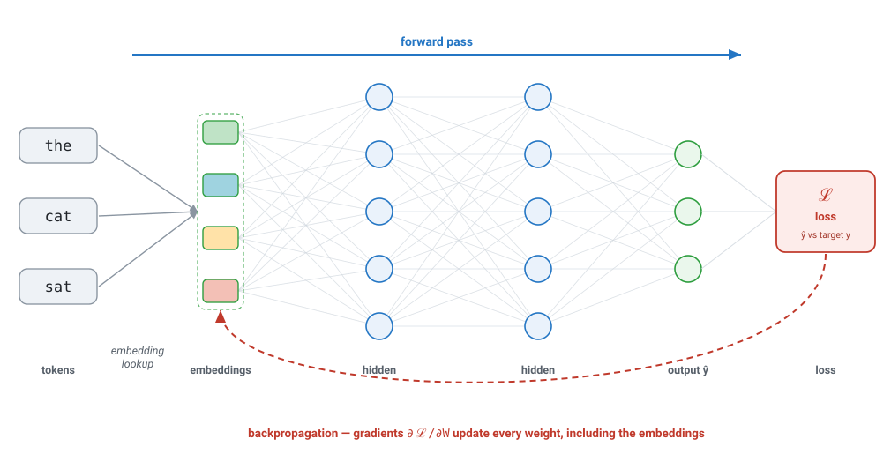
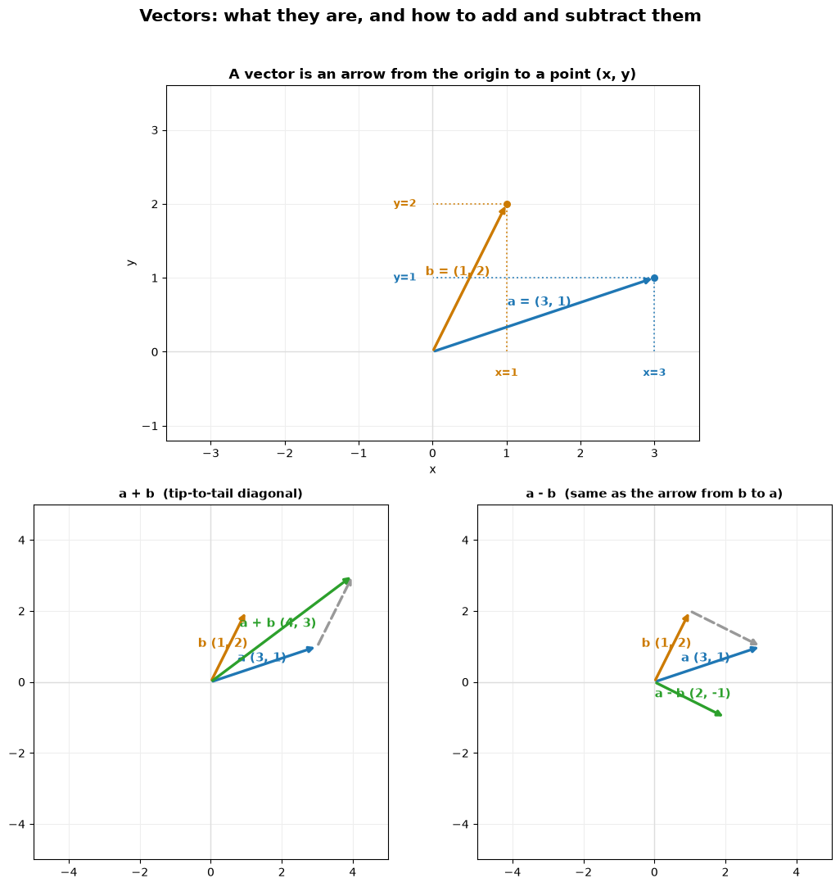
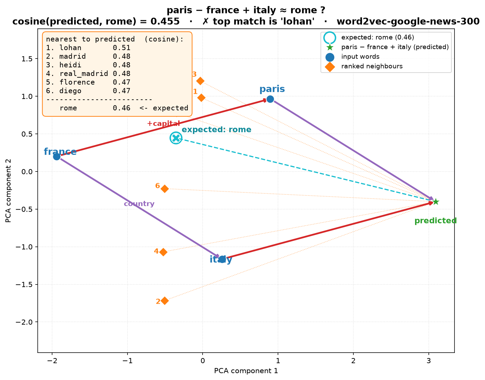
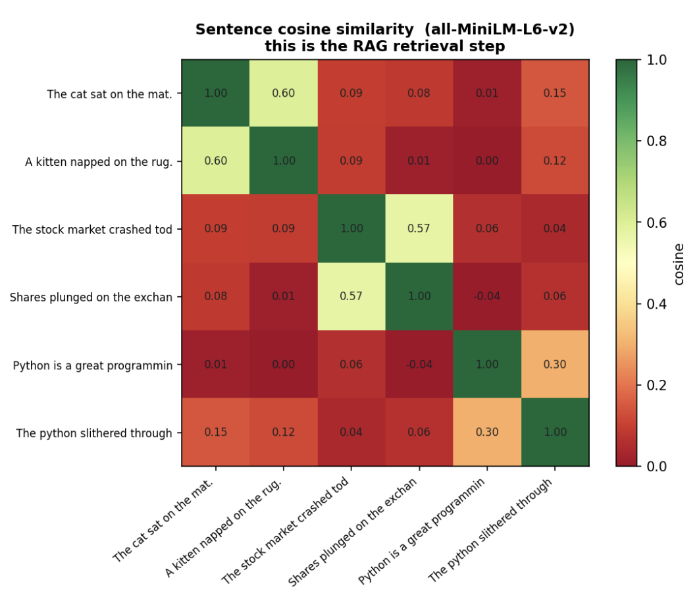

In [1]
from scripts.vector_add_subtract import build_figure fig = build_figure() fig
This article talks about the science behind RAG, i.e. Retrieval Augmented Generation. RAG is a powerful method to augment LLM context with relevant data.
Topics
The vectors this whole post compares — the ones we'll judge by the angle between
them — are learned. Each token is mapped to an embedding vector (just a row
looked up in a table), pushed forward through a
fully-connected network to a prediction ŷ, and a
loss measures how wrong it is against the target
y. Backpropagation then sends gradients
∂ℒ/∂W back through every layer — and crucially,
back into the embedding table itself. After millions of updates, words used
in similar contexts drift to similar vectors. That is why cosine between
them ends up meaning something.

The rest of this notebook earns that intuition from the ground up — starting with what a vector even is, then what the cosine of the angle between two of them means, and finally seeing the learned word vectors above in action.
A vector is just an arrow from the origin to a point (x, y).
Adding two vectors is tip-to-tail (the diagonal of the parallelogram);
subtracting a − b is the arrow that points from b to
a. That's the entire mechanical vocabulary we need.
from scripts.vector_add_subtract import build_figure fig = build_figure() fig

(x, y); a + b as the
tip-to-tail diagonal; a − b as the arrow from b to a.Forget vectors for a second. For a point on the unit circle at angle θ, the
cosine is simply its x-coordinate. It starts at +1 (0°,
pointing right), falls through 0 (90°, straight up), to
−1 (180°, pointing left).
C_VEC, C_COS, C_DROP = "#1f77b4", "#2ca02c", "#999999" HIGHLIGHT = 35 # degrees, the worked example MARKS = list(range(0, 360, 45)) # 0,45,...,315 from scripts.unit_circle_cosine import build_figure fig = build_figure() fig # shows inline
Move the pointer around the circle: the blue vector has
length 1, and its shadow on the x-axis — the thick
green vector — is cos θ. Watch the
readout cross zero at 90° and flip negative past it.
That bounded range [−1, +1] is the whole reason cosine makes a
convenient similarity score: +1 = same direction, 0 =
perpendicular, −1 = opposite.
Word embeddings (word2vec) place each word at a point in a high-dimensional space so that directions carry meaning. Here each word is a 300-dimensional vector — exactly the kind of vector the network in section 0 learns.
from scripts.local_vectors import e, nearest, analogy e("king").shape
(300,)
The famous result king − man + woman ≈ queen isn't an equation —
it's a cosine nearest-neighbour search around the computed point.
"queen" is simply the highest-cosine neighbour of king − man + woman:
nearest(e("king") - e("man") + e("woman"))
[('king', 0.845), ('queen', 0.730), ('monarch', 0.645), ('princess', 0.616), ('crown_prince', 0.582)]
The analogy helper does the same arithmetic but drops the input
words from the results, so the intended answer rises to the top:
analogy("man", "king", "woman") # man:king :: woman:?
[('queen', 0.730), ('monarch', 0.645), ('princess', 0.616), ('crown_prince', 0.578), ('prince', 0.578)]
analogy("walk", "walking", "swim")
[('swimming', 0.863), ('swam', 0.721), ('swims', 0.705), ('swimmers', 0.690), ('paddling', 0.664)]
analogy("small", "smaller", "big")
[('bigger', 0.804), ('larger', 0.629), ('Bigger', 0.587), ('biggest', 0.524), ('huge', 0.520)]
paris − france + italy should land on rome.
Same arithmetic, same cosine search — but the top neighbour is lohan:
the "Paris" vector is contaminated by Paris Hilton.
analogy("paris", "france", "rome")
[('italy', 0.495), ('european', 0.489), ('italian', 0.479), ('england', 0.469), ('italians', 0.464)]
analogy("italy", "rome", "france")
[('paris', 0.435), ('albert', 0.419), ('toronto', 0.399), ('french', 0.397), ('donnie', 0.389)]

paris analogy in 2-D (PCA projection — read distances
with care). The vocabulary geometry is simply off here.nearest(e("lohan"))
[('lohan', 1.000), ('lindsay_lohan', 0.698), ('britney', 0.697), ('heidi', 0.681), ('charlie_sheen', 0.673)]
A word is exactly cosine 1.0 with itself — and its neighbours
reveal the company it keeps. "lohan" sits among celebrities, which is exactly
why it hijacked the Paris analogy.
Words were the previous rung; the next is whole sentences. A trained encoder
(here all-MiniLM-L6-v2) maps each sentence to a single vector, and we
score every pair by the cosine of the angle between them. The
heatmap below is exactly that pairwise cosine matrix — the diagonal is
1.00 (every sentence is identical to itself), and the bright off-diagonal
blocks are sentences that mean the same thing even when they share almost no words.

all-MiniLM-L6-v2).
The three thematic pairs — cats, the stock market, and Python — each light up
(0.60, 0.57, 0.30) despite differing wording,
while cross-topic pairs stay near zero. This is the RAG retrieval step:
embed a query, then take its highest-cosine neighbours.Here is the whole post in one widget. Each video's title + description is turned
into a TF-IDF vector (one weight per word); your query becomes a vector the
same way; and the results are ranked by the cosine of the angle
between them — all in your browser, no server. Try
machine learning, bake bread, beginner workout,
or cheap travel japan and watch the ranking reshuffle.
Typing runs the bag-of-words version, so it matches on shared
words, not meaning: type fix a leaking faucet and you get nothing,
because the right video says "dripping tap" and "worn washer" — no word in common.
Now open the ✨ Semantic suggestions dropdown. Those ten queries were each
embedded once, offline, with BGE-M3 (the same encoder real RAG systems use);
the page ships only the resulting 1024-d vectors. Pick "how do I fix a leaky
faucet" and the identical cosine — now over learned embeddings instead
of word counts — floats the plumbing videos ("Clear a Slow Drain", "Stop a Dripping
Tap") to the top. Same geometry, better vectors.
king − man + woman ≈ queen.